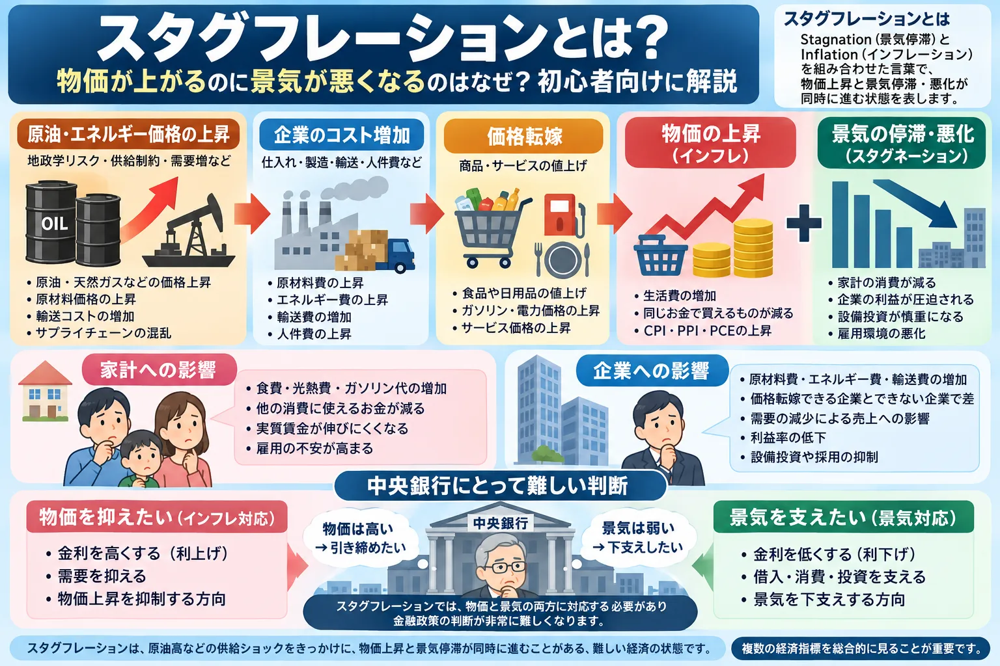

話題・トレンド
スタグフレーションとは？物価が上がるのに景気が悪くなるのはなぜ？初心者向けに解説
「物価が上がっているなら景気も良いのでは？」と思うかもしれません。しかし、原油や原材料などのコスト上昇によって物価が上がる一方、家計や企業への負担が増え、景気が弱くなる場合があります。こうした場面でニュースに登場するのが「スタグフレーション」です。
Overview
物価上昇と景気悪化が同時に進む仕組みを整理

スタグフレーションを理解するときのポイントは、「なぜ物価が上がっているのか」を見ることです。需要が非常に強くて物価が上がる場合と、エネルギーや原材料の供給制約によってコストが上がる場合では、景気への影響が異なることがあります。
Definition
スタグフレーションとは？
スタグフレーション（Stagflation）は、Stagnation（景気停滞）とInflation（インフレーション）を組み合わせた言葉です。
Inflation
物価が上昇する
食品、エネルギー、サービスなど幅広い価格が上昇し、同じ金額で購入できる商品やサービスが減ることがあります。
Stagnation
景気が停滞・悪化する
生産、消費、設備投資などが弱くなり、場合によっては企業業績や雇用環境にも悪影響が広がります。
重要：単に「物価が高い」「インフレ率が上がった」というだけでスタグフレーションと呼べるわけではありません。物価だけでなく、GDP、消費、雇用、賃金、企業活動など景気側の情報も合わせて確認する必要があります。
Comparison
インフレ・デフレ・景気後退とは何が違う？
| 状態 | 物価 | 景気 | 雇用 | 企業への影響 | 家計への影響 |
|---|---|---|---|---|---|
| インフレ | 上昇 | 強い場合も弱い場合もある | 状況による | 売上増加とコスト増加の両面 | 生活費が増える |
| デフレ | 下落 | 弱くなりやすい | 悪化する場合がある | 売上・利益を圧迫する場合 | 物価低下の一方、所得・雇用に注意 |
| 景気後退 | 必ずしも一定ではない | 悪化 | 悪化しやすい | 需要減少が重荷 | 所得・雇用への不安 |
| スタグフレーション | 上昇 | 停滞・悪化 | 悪化する場合がある | コスト増と需要減速が重なる場合 | 生活費増と所得・雇用不安が重なる場合 |
実際の経済は表のようにきれいに分類できるとは限りません。物価、景気、雇用はそれぞれ異なるタイミングで変化するため、複数の指標から全体像を見ることが重要です。
Mechanism
なぜ「物価上昇」と「景気悪化」が同時に起こるの？
「物価が上がる＝景気が良い」とは限りません。需要が強くなった結果ではなく、供給側の問題によって物価が押し上げられるケースがあるからです。
家計へのルート
生活費の上昇 → 他の商品・サービスに使えるお金が圧迫される → 消費の重荷になる場合があります。
企業へのルート
コスト増加 → 利益率の低下 → 設備投資や採用などを慎重にする → 景気の重荷になる場合があります。
このように、同じコスト上昇が「物価を押し上げる力」と「景気を押し下げる力」の両方を生むことがあります。
Inflation Types
「需要インフレ」と「コストプッシュ・インフレ」の違い
Demand-pull
需要が強くて物価が上がる
消費や投資などの需要が供給能力を上回るほど強くなると、企業が値上げしやすくなり、物価上昇につながる場合があります。
Cost-push
供給・コスト側から物価が上がる
原油、エネルギー、原材料、輸送費、賃金、サプライチェーンの混乱などによって企業コストが増え、価格転嫁を通じて物価が上昇する場合があります。
- 原油
- 天然ガス
- 電力
- 原材料
- 輸送費
- 賃金
- サプライチェーン
現実のインフレは需要と供給のどちらか一方だけで説明できるとは限りません。需要の強さ、供給制約、賃金、為替、政策など複数の要因が同時に影響する場合があります。
Oil & Energy
原油価格が上がるとなぜスタグフレーションが警戒されるの？
家計
エネルギー負担が他の消費を圧迫
ガソリン代や光熱費などへの支出が増えると、外食、衣料、娯楽など他の消費に使えるお金が減る場合があります。
企業
利益や設備投資への重荷
エネルギーや輸送コストを販売価格へ十分転嫁できなければ、利益率が低下し、設備投資などを慎重にする要因になる場合があります。
原油高が経済へ波及する仕組みは、「原油価格が上がると株価や物価はどうなる？」でも詳しく解説しています。
原油高＝必ずスタグフレーションではありません。原油価格が上昇していても、賃金、消費、企業利益、生産、雇用などが十分に強ければ、経済全体の状況は異なります。
Inflation Data
PPI・CPI・PCEはどう関係する？
PPI
生産者側の価格動向を見る材料です。企業の仕入れや販売段階で価格圧力が強まっているかを考える際に使われます。
CPI
消費者が購入する財・サービスの価格動向を見る代表的な物価指標です。
PCEデフレーター
米国の個人消費に関連する物価動向を見る指標で、FRBの金融政策を考えるうえでも注目されます。
スタグフレーションを考える場合、物価指標だけでは不十分です。GDP、個人消費、生産、設備投資、失業率、雇用者数など「景気が強いのか弱いのか」を示す情報も確認します。米国の雇用を見る基本は「米国雇用統計とは？」で整理しています。
Households
スタグフレーションになると家計にはどんな影響がある？
物価
生活費が増える
食品、エネルギー、日用品、サービスなどの価格が上がると、同じ生活を維持するために必要なお金が増えます。
景気
賃金・雇用が弱くなる可能性
景気が停滞すると、企業が採用や賃上げに慎重になり、家計の所得環境が弱くなる可能性があります。
名目賃金と実質賃金の違い
名目賃金は実際に受け取る給与の金額です。一方、実質賃金は物価変動を考慮した購買力を表します。例えば給与が増えていても、それ以上のペースで生活費が上昇すれば、実際に購入できる商品やサービスが増えないことがあります。
Companies
スタグフレーションになると企業にはどんな影響がある？
- 原材料費
- エネルギー費
- 輸送費
- 人件費
- 価格転嫁
- 消費減速
- 利益率
価格転嫁できる企業
コスト増を販売価格へ反映しやすい
商品やサービスに強い競争力がある場合などは、値上げによってコスト増加の一部を吸収できる場合があります。
価格転嫁しにくい企業
利益率が圧迫されやすい
競争が激しく値上げしにくい場合、原材料費や人件費が上昇しても販売価格へ反映できず、利益率が低下する可能性があります。
同じスタグフレーション懸念でも、企業の収益構造や業種によって影響は異なります。「すべての企業が同じように悪化する」と考えないことが重要です。
Central Banks
なぜ中央銀行にとってスタグフレーションは難しいの？
スタグフレーションが難しい最大の理由は、物価と景気が金融政策に対して反対方向の対応を求めやすいことです。
インフレが強い場合
景気が弱い場合
スタグフレーションでは、「物価は高いので引き締めたい」という圧力と、「景気は弱いので下支えしたい」という圧力が同時に存在します。しかも金融政策の効果には時間差があり、中央銀行が景気や物価を自由に操作できるわけではありません。
中央銀行の発言で「タカ派」「ハト派」という表現が使われる理由は、「タカ派・ハト派とは？」でも解説しています。
Policy Rate
スタグフレーションと政策金利の関係
中央銀行がインフレ抑制を重視して高い金利を維持すれば、借入コストなどを通じて景気への負担が大きくなる場合があります。反対に、景気支援を重視して金融緩和を行えば、インフレ圧力が十分に弱まっていない場合には物価への警戒が残ることがあります。
物価
インフレは鈍化しているか
CPIやPCEなどを通じて物価上昇の広がりや持続性を確認します。
景気・雇用
経済がどこまで弱いか
GDP、消費、雇用などから景気への負担を確認します。
金融環境
市場金利や信用環境
国債利回りや企業・家計の資金調達環境も政策判断に関係します。
基本的な仕組みは「政策金利とは？」、米国の金融政策会合については「FOMCとは？」で詳しく整理しています。
スタグフレーション＝必ず利上げ、または必ず利下げではありません。中央銀行は物価、景気、雇用、金融環境など複数の情報を確認して政策を判断します。
Stocks
スタグフレーションになると株価はどうなる？
コスト増加
原材料・エネルギー・人件費などが増えると、企業利益を圧迫する場合があります。
需要減速
家計の購買力が弱まれば、企業の商品・サービスへの需要も減速する場合があります。
高金利
インフレ警戒から金利が高い状態が続けば、資金調達や株式評価への重荷になる場合があります。
ただし、株価は将来の企業業績、市場予想、すでに株価へ織り込まれた情報、投資家心理などでも動きます。そのため「スタグフレーション＝必ず株安」ではありません。
また、銀行、エネルギー、消費関連などでは金利や資源価格の影響が異なります。業種ごとの違いは「銀行株とは？」や「セクター投資とは？」、株価全体の基本は「株価はなぜ上下するのか？」で確認できます。
Bonds & Yields
スタグフレーションと債券・金利の関係
インフレが長引くとの予想が強まれば、将来の政策金利や長期金利への見方が変わり、債券価格や利回りが動くことがあります。一方、景気後退への不安が非常に強まった場合には、安全性を重視する資金が国債へ向かい、利回りが低下する場面もあります。
したがって、「スタグフレーション＝必ず国債売り・金利上昇」ではありません。インフレ懸念と景気後退懸念のどちらが市場で強く意識されているかも重要です。
債券の基本は「国債とは？」、市場全体の動きは「債券市場とは？」、物価を考慮した金利は「実質金利とは？」で解説しています。
Gold
スタグフレーションになると金（ゴールド）は上がるの？
インフレや経済への不安が強まると、価値の保存手段として金が注目される場合があります。しかし、金価格はスタグフレーションだけで決まるわけではありません。
- 実質金利
- 米ドル
- 金融政策
- リスク回避
- 中央銀行需要
- 金の需給
例えばインフレが強くても実質金利が大きく上昇すれば、利息を生まない金にとって逆風となる場合があります。ドルの動きも重要です。
詳しくは「金（ゴールド）とは？」と「実質金利とは？」で整理しています。
スタグフレーション＝必ず金価格上昇ではありません。
History
1970年代のスタグフレーションとは？
スタグフレーションの代表的な歴史例としてよく挙げられるのが、1970年代の米国などで見られた高インフレと景気・雇用の悪化です。
1973～74年の第一次オイルショックでは、中東情勢と石油供給の制約によって原油価格が大幅に上昇しました。エネルギーは輸送、製造、暖房など幅広い経済活動に使われるため、原油高は企業コストと物価を押し上げる一方、経済成長を弱める要因にもなりました。
1978～79年にもイラン革命などを背景とした第二次オイルショックが発生し、エネルギー価格とインフレへの警戒が再び強まりました。ただし、1970年代の高インフレは石油だけが原因だったわけではなく、当時の金融政策、需要、賃金・価格形成、ドル、食料価格など複数の要因が関係していました。
現在と1970年代を単純に同一視しないことが重要です。経済構造、エネルギー事情、中央銀行の金融政策の枠組み、労働市場、国際経済などは当時と現在で異なります。
参考：Federal Reserve History「The Great Inflation」「Oil Shock of 1973-74」「Oil Shock of 1978-79」。
News Checklist
「スタグフレーション懸念」というニュースはどう読めばいい？
ニュースの「懸念」という表現と、「実際に経済がスタグフレーション状態にある」という判断は分けて考える必要があります。
-
CPI・PCEなどの物価
物価上昇が加速しているのか、鈍化しているのかを確認します。
-
PPIなど企業側の価格動向
企業のコストや販売価格への圧力が強まっているかを見ます。
-
GDP・個人消費などの景気
経済活動が拡大しているのか、停滞しているのかを確認します。
-
雇用統計・失業率
雇用環境が大きく悪化していないかを確認します。
-
賃金
給与の伸びが物価上昇に追いついているかも重要です。
-
原油・エネルギー価格
供給ショックによる物価上昇圧力が強まっていないかを確認します。
-
中央銀行の金融政策
インフレと景気について中央銀行がどのようなリスクを重視しているかを見ます。
-
国債利回り
市場が将来のインフレや政策金利をどのように予想しているかを考える材料になります。
-
企業業績
コスト増や消費減速が実際の売上・利益へどこまで波及しているかを確認します。
一つのCPIやGDPだけで「スタグフレーションになった」と判断するのではなく、物価・景気・雇用を中心に複数の指標を組み合わせて見ることが大切です。
Latest Update
直近でスタグフレーションが注目されている理由
以下は2026年9月15日時点で公表済みの一次情報をもとに整理しています。この部分は経済指標の更新に合わせて見直す必要があります。
原油・エネルギー価格への警戒
米国エネルギー情報局（EIA）が2026年9月9日に公表した短期エネルギー見通しでは、世界の原油価格は8月に1バレル平均91ドルとなり、7月から7ドル上昇したとされています。EIAは世界の石油在庫減少や中東からの供給制約を背景に、2026年後半のBrent原油価格を平均90ドル前後と予想しています。
米国ではエネルギー価格と物価が注目
米労働統計局（BLS）が2026年9月11日に公表した8月CPIは、総合指数が前月比0.4％上昇、前年同月比3.4％上昇しました。8月はガソリン価格が前月比3.9％上昇し、エネルギー指数は2.1％上昇しています。一方、食品とエネルギーを除く指数は前年同月比2.4％上昇でした。
米国の成長率はプラスだが減速も確認されている
米商務省経済分析局（BEA）が2026年8月26日に公表した2026年4～6月期の実質GDP・2次推計は年率1.5％増でした。1～3月期の2.1％増から伸びは鈍化しています。ただしGDP自体はプラス成長であり、この数字だけを根拠に米国経済を「スタグフレーション」と断定することは適切ではありません。
日本も「物価」と「景気」を分けて確認する必要がある
総務省統計局が2026年8月21日に公表した全国CPIの7月分では、総合指数が前年同月比1.9％上昇、生鮮食品を除く総合指数が1.8％上昇しました。一方、内閣府が9月8日に公表した2026年4～6月期GDP・2次速報では、実質GDPは前期比0.4％増でした。
金融政策との組み合わせも市場の焦点
米国ではFOMCが2026年9月15～16日に開催予定で、日本銀行も9月17～18日に金融政策決定会合を予定しています。原油・エネルギー価格、物価、景気、雇用が同時に注目される局面では、中央銀行がインフレと景気をどのように評価するかが市場の重要な材料になります。
現時点で「米国や日本はスタグフレーションである」とこの記事では断定しません。原油・エネルギー価格の上昇や一部の物価圧力から「スタグフレーションのリスク」が意識される場面はありますが、実際の判断には物価だけでなく、GDP、消費、雇用、賃金、企業活動などを継続的に確認する必要があります。
このセクションの主な確認先
- 米国エネルギー情報局（EIA） Short-Term Energy Outlook：2026年9月9日公表
- 米労働統計局（BLS） Consumer Price Index：2026年9月11日公表
- 米商務省経済分析局（BEA） GDP Second Estimate：2026年8月26日公表
- 総務省統計局 消費者物価指数：2026年8月21日公表
- 内閣府 四半期別GDP速報：2026年9月8日公表
- Federal Reserve FOMC Meeting Calendar：2026年9月
- 日本銀行 金融政策決定会合 公表予定：2026年9月
FAQ
スタグフレーションのよくある質問
-
スタグフレーションとは何ですか？
Stagnation（景気停滞）とInflation（インフレーション）を組み合わせた言葉で、物価上昇と景気の停滞・悪化が同時に進む状態を表します。雇用環境の悪化を伴う場合もあります。 -
インフレとスタグフレーションの違いは何ですか？
インフレは物価が継続的に上昇する状態です。スタグフレーションは、物価上昇に加えて景気停滞・悪化が同時に起きている点が異なります。 -
なぜ物価上昇と景気悪化が同時に起こるのですか？
原油や原材料などのコスト上昇が企業の価格転嫁を通じて物価を押し上げる一方、家計の購買力や企業利益を圧迫し、消費や投資の重荷になる場合があるためです。 -
原油価格が上がるとスタグフレーションになりますか？
必ずしもなりません。原油高は物価上昇と景気への負担を同時にもたらす可能性がありますが、GDP、雇用、賃金、消費、企業業績など他の経済状況も確認する必要があります。 -
スタグフレーションになると金利は上がりますか？
必ず上がるとは限りません。インフレ抑制は金融引き締めを検討する要因になりますが、景気悪化は金融緩和を検討する要因にもなります。中央銀行は複数の情報を踏まえて判断します。 -
スタグフレーションになると株価は下がりますか？
コスト増加、需要減速、高金利が企業の重荷になる可能性はありますが、株価は市場予想、業種、企業業績、織り込み状況などでも変化するため、必ず下落するとは限りません。 -
スタグフレーションになると金価格は上がりますか？
インフレや経済不安から金が注目される場合はありますが、実質金利、米ドル、金融政策、投資家心理、中央銀行需要、需給などでも価格が動くため、必ず上昇するわけではありません。 -
スタグフレーションを判断するときは何を見ればいいですか？
CPI・PCE・PPIなどの物価指標だけでなく、GDP、個人消費、雇用、失業率、賃金、原油価格、金融政策、国債利回り、企業業績などを組み合わせて確認することが重要です。
Related Articles
あわせて読みたい関連記事
Summary
まとめ｜スタグフレーションは物価だけでなく景気も一緒に見る
- スタグフレーションは物価上昇と景気停滞・悪化が同時に進む状態を表します。
- 単なる物価上昇だけではスタグフレーションとはいえません。
- 原油・エネルギー・原材料などの供給ショックが原因になる場合があります。
- コスト上昇と家計の購買力低下が景気の重荷になる場合があります。
- 中央銀行はインフレ抑制と景気への配慮という難しい判断を迫られる場合があります。
- スタグフレーションだからといって、必ず利上げ・株安・国債売り・金高になるわけではありません。
- 1970年代は代表的な歴史例ですが、現在の経済と単純に同一視することはできません。
- 「スタグフレーション懸念」と「実際にスタグフレーション状態にある」という判断は区別する必要があります。
- CPI・PCEなどの物価だけでなく、GDP、消費、雇用、賃金など複数の経済指標を見ることが重要です。
Next Step
物価・金利・景気のつながりを続けて確認する
スタグフレーションのニュースを理解するには、物価だけでなく原油、雇用、政策金利、国債市場などを一つの流れとして見ることが役立ちます。
免責事項
本記事は、スタグフレーション、インフレ、景気、金融政策、株式・債券・金などの仕組みを初心者向けに解説することを目的とした一般的な情報提供です。特定の金融商品・銘柄・投資手法の購入、売却、保有を推奨するものではありません。
経済指標、原油価格、金融政策などは変化します。最新情報については、各国政府、中央銀行、統計機関などの公表資料をご確認ください。投資判断はご自身の目的、資産状況、リスク許容度などを踏まえて行ってください。